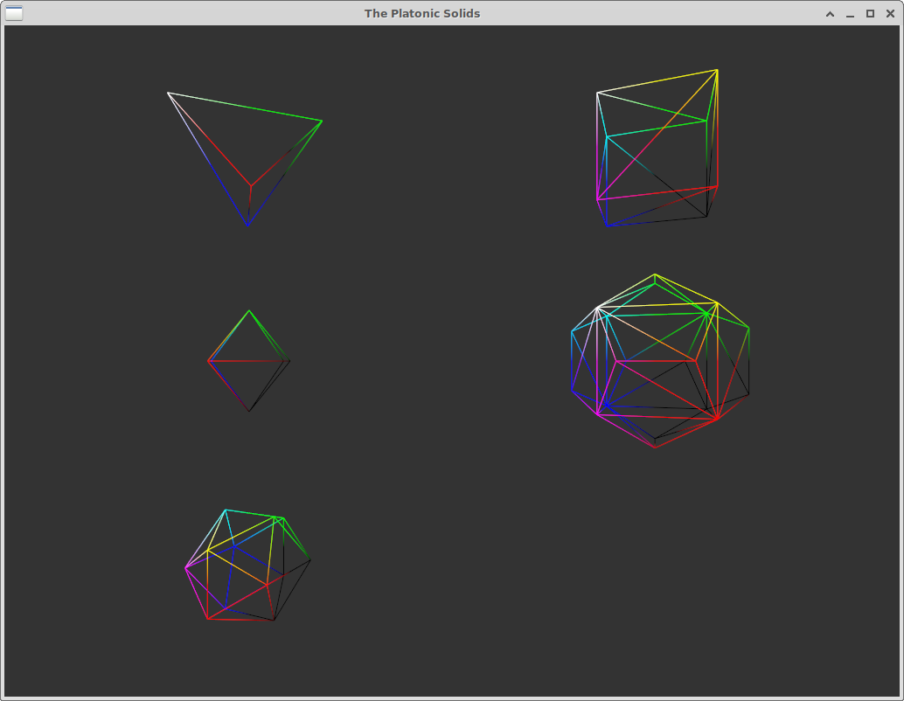

For testing and debugging 3D rendering it is convenient to have the ability to generate some three-dimensional "primitive" shapes from code. You might think of a placeholder mesh to use when a mesh file doesn't load properly, or a variety of generic mesh shapes to test a new shader on. I didn't have this in my graphics helper code. I remembered reading about generation of the Platonic Solids in Jim Blinn's Corner: A Trip Down the Computer Graphics Pipeline, Chapter Four, 1996. I have the book, so thought this might be an interesting exercise to start with. Another discussion of rendering can be found in David Eberly's Platonic Solids PDF, where triangle connectivity is also provided. There are 5 Platonic Solids possible in 3 dimensions. These are regular shapes with a number of sides, where each side is an equal size and all edges of shapes are the same length. They are interesting mathematical shapes with names derived from the Greek numbers for their face count. The best one by name is obviously the dodecahedron, but the isocahedron is a close second. The tetrahedron is right out.
When rendering I wanted to render only with triangle facets, so I had to adapt Jim Blinn's listings, (some of which use square or pentagon polygons), to break these into triangles. I produced C source code to list the vertices and the indices of the faces for each solid, and rendered each as a wireframe mesh in an example program, which you can find on GitHub.
One shortcoming of this listing is that it does not provide a set of texture coordinates. That would be interesting to derive later. Normals are also not provided. It would be trivial to derive flat normals (the cross product of 2 edge vectors from each face) and add these to the listing. Without either of these features the solid renders are hard to visualise, so the wireframe render made more sense.
The book chapter lists points and polygons using a numbering scheme to identify some interesting geometric properties, and numerical patterns, for each solid. I went through by hand and re-sorted these into boring array indices, so there may be a mistake or two lingering in my code. I tried to retain the original numbering in comments. Not all of the shapes are given as "unit" sized between -1 and 1, but it's trivial to scale these to size. The solids are not given as a "face down" resting configuration, but the book describes transformations to get each. Perhaps that is important if you are using them to represent gaming dice. You will notice that the eight-sided solid looks small compared the cube. It is the "dual" of the cube - if placed inside the cube (I did this to check) the vertices touch each of the cube's faces.
/**
* Based on "A Trip Down the Graphics Pipeline", Ch. 4 "Platonic Solids", Jim Blinn.
*/
//
// D4 - Tetrahedron
//
float platonic_tetrahedron_vertices_xyz[4 * 3] = {
1.0f, 1.0f, 1.0f, // 0
1.0f, -1.0f, -1.0f, // 1
-1.0f, 1.0f, -1.0f, // 2
-1.0f, -1.0f, 1.0f // 3
};
uint32_t platonic_tetrahedron_indices_ccw_triangles[4 * 3] = {
3, 2, 1, //
2, 3, 0, //
1, 0, 3, //
0, 1, 2 //
};
//
// The D6
//
float platonic_cube_vertices_xyz[8 * 3] = {
1.0f, 1.0f, 1.0f, // 0
1.0f, 1.0f, -1.0f, // 1
1.0f, -1.0f, 1.0f, // 2
1.0f, -1.0f, -1.0f, // 3
-1.0f, 1.0f, 1.0f, // 4
-1.0f, 1.0f, -1.0f, // 5
-1.0f, -1.0f, 1.0f, // 6
-1.0f, -1.0f, -1.0f // 7
};
// Facets are square but divided into 2 triangles each here.
uint32_t platonic_cube_indices_ccw_triangles[6 * 2 * 3] = {
1, 0, 2, 2, 3, 1, //
4, 5, 7, 7, 6, 4, //
0, 1, 5, 5, 4, 0, //
3, 2, 6, 6, 7, 3, //
2, 0, 4, 4, 6, 2, //
1, 3, 7, 7, 5, 1 //
};
//
// The D8
// NB the octohedron is the 'dual' shape of the cube -> each vertex lies on a cube face.
float platonic_octahedron_vertices_xyz[6 * 3] = {
1.0f, 0.0f, 0.0f, // 0
-1.0f, 0.0f, 0.0f, // 1
0.0f, 1.0f, 0.0f, // 2
0.0f, -1.0f, 0.0f, // 3
0.0f, 0.0f, 1.0f, // 4
0.0f, 0.0f, -1.0f // 5
};
// Facets are already triangle-shaped.
uint32_t platonic_octahedron_indices_ccw_triangles[8 * 3] = {
0, 2, 4, //
2, 0, 5, //
3, 0, 4, //
0, 3, 5, //
2, 1, 4, //
1, 2, 5, //
1, 3, 4, //
3, 1, 5 //
};
//
// D12 - Dodecahedron
// Note: the dodecahedron has the property of having a cube embedded within it.
#define PLA_PHI 1.618034f
#define PLA_INV_PHI 0.618034f
float platonic_dodecahedron_vertices_xyz[20 * 3] = {
1, 1, 1, // 0 "1"
1, 1, -1, // 1 "2"
1, -1, 1, // 2 "3"
1, -1, -1, // 3 "4"
-1, 1, 1, // 4 "5"
-1, 1, -1, // 5 "6"
-1, -1, 1, // 6 "7"
-1, -1, -1, // 7 "8"
PLA_INV_PHI, PLA_PHI, 0.0f, // 8 "11"
-PLA_INV_PHI, PLA_PHI, 0.0f, // 9 "12"
PLA_INV_PHI, -PLA_PHI, 0.0f, // 10 "13"
-PLA_INV_PHI, -PLA_PHI, 0.0f, // 11 "14"
PLA_PHI, 0.0f, PLA_INV_PHI, // 12 "21"
PLA_PHI, 0.0f, -PLA_INV_PHI, // 13 "22"
-PLA_PHI, 0.0f, PLA_INV_PHI, // 14 "23"
-PLA_PHI, 0.0f, -PLA_INV_PHI, // 15 "24"
0.0f, PLA_INV_PHI, PLA_PHI, // 16 "31"
0.0f, -PLA_INV_PHI, PLA_PHI, // 17 "32"
0.0f, PLA_INV_PHI, -PLA_PHI, // 18 "33"
0.0f, -PLA_INV_PHI, -PLA_PHI, // 19 "34"
};
uint32_t platonic_dodecahedron_indices_ccw_triangles[36 * 3] = {
1, 8, 0, 0, 12, 13, 13, 1, 0, // "11"
4, 9, 5, 5, 15, 14, 14, 4, 5, // "12"
2, 10, 3, 3, 13, 12, 12, 2, 3, // "13"
7, 11, 6, 6, 14, 15, 15, 7, 6, // "14"
2, 12, 0, 0, 16, 17, 17, 2, 0, // "21"
1, 13, 3, 3, 19, 18, 18, 1, 3, // "22"
4, 14, 6, 6, 17, 16, 16, 4, 6, // "23"
7, 15, 5, 5, 18, 19, 19, 7, 5, // "24"
4, 16, 0, 0, 8, 9, 9, 4, 0, // "31"
2, 17, 6, 6, 11, 10, 10, 2, 6, // "32"
1, 18, 5, 5, 9, 8, 8, 1, 5, // "33"
7, 19, 3, 3, 10, 11, 11, 7, 3 // "34"
};
//
// D20 - Isocahedron
//
float platonic_isocahedron_vertices_xyz[12 * 3] = {
// first 'golden rectangle'
PLA_PHI, 1.0f, 0.0f, // 0 "11"
-PLA_PHI, 1.0f, 0.0f, // 1 "12"
PLA_PHI, -1.0f, 0.0f, // 2 "13"
-PLA_PHI, -1.0f, 0.0f, // 3 "14"
// second
1.0f, 0.0f, PLA_PHI, // 4 "21"
1.0f, 0.0f, -PLA_PHI, // 5 "22"
-1.0f, 0.0f, PLA_PHI, // 6 "23"
-1.0f, 0.0f, -PLA_PHI, // 7 "24"
// third
0.0f, PLA_PHI, 1.0f, // 8 "31"
0.0f, -PLA_PHI, 1.0f, // 9 "32"
0.0f, PLA_PHI, -1.0f, // 10 "33"
0.0f, -PLA_PHI, -1.0f // 11 "34"
};
uint32_t platonic_isocahedron_indices_ccw_triangles[20 * 3] = {
0, 8, 4, // 0
0, 5, 10, // 1
2, 4, 9, // 2
2, 11, 5, // 3
1, 6, 8, // 4
1, 10, 7, // 5
3, 9, 6, // 6
3, 7, 11, // 7
0, 10, 8, // 8
1, 8, 10, // 9
2, 9, 11, // 10
3, 11, 9, // 11
4, 2, 0, // 12
5, 0, 2, // 13
6, 1, 3, // 14
7, 3, 1, // 15
8, 6, 4, // 16
9, 4, 6, // 17
10, 5, 7, // 18
11, 7, 5, // 19
};